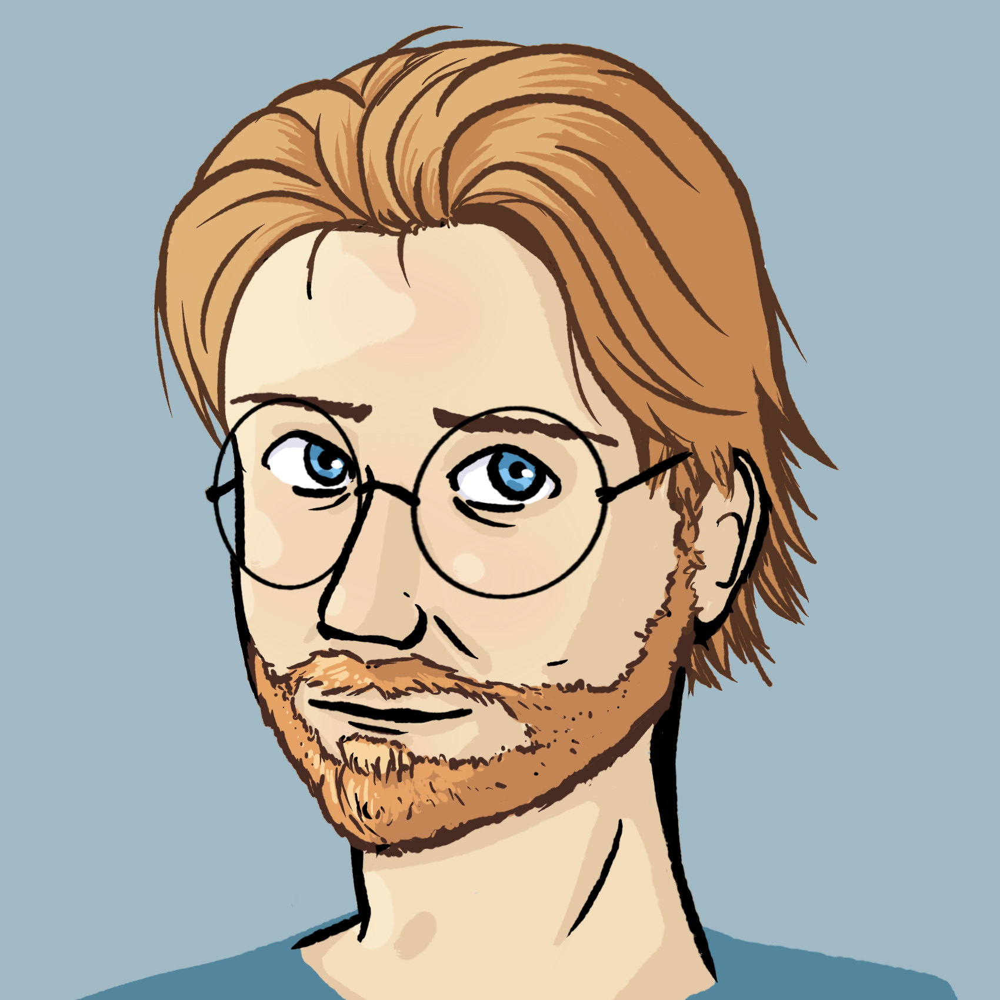

 Ethan Colucci - Developper
Contact Me
| 📧 E.Colucci@outlook.com | 📞 (647) 525-0156 | 📍 Canada |
My Links
About Me
| Driven and adaptable Game Developer with 7 years of experience building interactive experiences, including 4 years in professional environments. Currently specializing in Unity, C#, and Virtual Reality (VR) development for training and simulation. I create immersive, high-performance applications by combining strong technical foundations with creative design thinking. Experienced across VR, mobile, and traditional platforms, I thrive on solving complex problems, rapidly learning new technologies, and collaborating across disciplines to deliver polished results. |  |
Skills and Technologies
🧠 Programming | 🎮 Game Engines |
|
|
🗂️ Version Control | 🥽 Virtual Reality |
|
|
📱 Mobile Development | 🎨 Creative Tools |
|
|
☁️ Other Technologies | 🗣️ Languages |
|
|
Professional Experience
VR Vision — Intermediate VR Developer
September 2022 – June 2025
- Develop VR Training apps in Unity
- Create accurate simulacrums of professional tools
- Create designs based on real training processes
- Participate in on-site visits to document training processes
- Participate in the design and development of the in-house VR toolkit
No Fuss Tutors — Game Programmer
October 2021 – September 2022
- Sole C# programmer for a Unity-based game
- Participated in the design process
- Developed for multiple platforms
- Integrated AWS and MongoDB for database interaction
Unity Game Developer — Freelance
January 2021 – October 2021
- Collaborated with clients to define project goals and timelines
- Developed projects using Unity
- Communicated effectively and adapted to client needs
- Quickly learned and implemented new APIs
S&C Canada — Material Handler
June 2020 – October 2021
- Operated Class 2 and Class 5 Lift Trucks in tight spaces
- Balanced routine tasks with real-time requests from assembly line
- Worked independently and efficiently
Education
| Institution | Degree | Date |
|---|---|---|
| University of Ontario Institute of Technology | Bachelor of IT with honors in Game Development and Entrepreneurship | September 2015 – April 2019 |
| École secondaire Toronto Ouest | Bilingual High School Diploma (English and French) | June 2015 |
References
| Name | Relationship | Contact Info |
|---|---|---|
| Ahmad Askri | Coworker @ VR Vision | ahmad.askri@vrvision.ca, (647) 575-3208 |
| David Tucciarone | Manager @ VR Vision | david.tucciarone@vrvision.ca, (613) 898-2979 |
| Brett Andrews | Project Collaborator | blamx165@gmail.com, (613) 330-1812 |
| Nodi Ray | Coworker @ VR Vision | nodi1932@gmail.com, (647) 772-7343 |